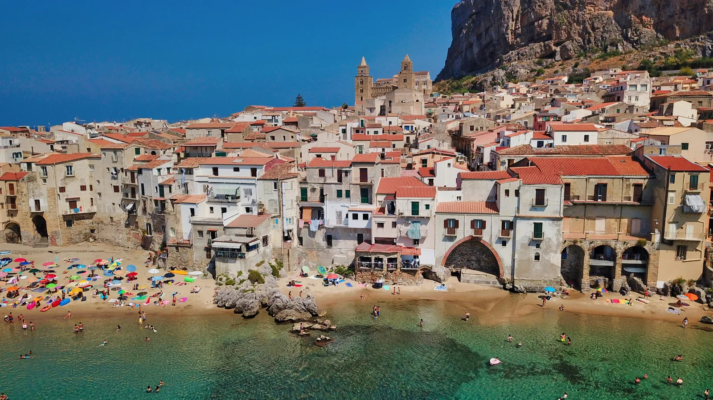

The short answer
Fly into Palermo and out of Catania: this "open jaw" saves a full day of driving back. Spend two days in Palermo (with Monreale and Cefalù), then cross the island south to the Valley of the Temples, east through the baroque towns of Noto and Ragusa, and finish with Siracusa, Etna and Taormina. Pick up the rental car on day 3, not on arrival: in Palermo you don't need it and the ZTL zones will cost you.
The route at a glance
| Day | Where | Sleep in |
|---|---|---|
| 1 | Palermo: markets, cathedral, street food | Palermo |
| 2 | Monreale + Cefalù | Palermo |
| 3 | Pick up car → Agrigento, Valley of the Temples at sunset | Agrigento |
| 4 | Scala dei Turchi → Villa Romana del Casale → Ragusa Ibla | Ragusa or Noto |
| 5 | Noto → Siracusa, evening in Ortigia | Siracusa |
| 6 | Siracusa: Neapolis park and Ortigia | Siracusa |
| 7 | Etna in the morning → Taormina → Catania airport | Taormina or fly home |
Day by day
Day 1 – Palermo, the loud and wonderful capital
Start at the Ballarò or Capo market for breakfast the Palermo way: an arancina, panelle (chickpea fritters) and, if you dare, pane ca' meusa. Walk to Quattro Canti, the cathedral and the Palazzo dei Normanni with the golden mosaics of the Palatine Chapel. In the evening, the Kalsa district and a granita at sunset by the sea.
Day 2 – Monreale and Cefalù
In the morning, the cathedral of Monreale (bus or taxi from Palermo, 30 minutes): its gold mosaics cover the whole interior and are one of the great sights of Italy. In the afternoon take the regional train to Cefalù (about an hour along the coast): a fishing town under a giant rock, a Norman cathedral and a beach right below the old houses. Stay for sunset on the pier, then train back.
Day 3 – Across the island to Agrigento
Pick up the car and drive south (about 2 hours). The Valley of the Temples is best in the late afternoon, when the stone turns golden: the Temple of Concordia is one of the best-preserved Greek temples in the world. Allow 3 hours and bring water: there is little shade.
Day 4 – White cliffs, Roman mosaics and Ragusa
Early stop at the Scala dei Turchi, the white marl cliff by the sea (view it from the beach: the cliff itself is closed to walkers). Then inland to the Villa Romana del Casale near Piazza Armerina, with the famous mosaics of the "bikini girls". Finish in Ragusa Ibla, a baroque town on a hill that looks like a stage set at night.
Day 5 – Noto and Siracusa
Noto is the capital of Sicilian baroque, rebuilt after the 1693 earthquake in warm golden stone. Walk Corso Vittorio Emanuele and have an almond granita at a historic café. Continue to Siracusa and spend the evening on the island of Ortigia: Piazza Duomo by night is one of the most beautiful squares in Italy.
Day 6 – Siracusa
Morning at the Neapolis archaeological park: the Greek theatre and the "Ear of Dionysius" cave. Afternoon in Ortigia: the market, the Fountain of Arethusa and a swim from the rocks in the warm months. Leave the car at the hotel: Ortigia is a ZTL.
Day 7 – Etna and Taormina
Drive up to Rifugio Sapienza (about 1,900 m) on Etna's south side: from there you can walk the old Silvestri craters for free or take the cable car higher; summit areas are only allowed with authorised guides. In the afternoon, Taormina: Corso Umberto and the Ancient Theatre with Etna and the sea behind the stage. Catania airport is about an hour away.
Car or no car?
For this route, yes, rent a car from day 3: trains in the interior of Sicily are slow and rare, and buses don't link Agrigento, Piazza Armerina and Ragusa well. Palermo, Cefalù, Siracusa and Taormina all work without a car. Three things to know: avoid the ZTL zones in the old towns, choose full insurance (narrow streets, creative parking) and expect slower roads than the map says. More in our car rental in Italy guide.
What to eat
- Arancine/arancini (Palermo says arancina, Catania says arancino: don't take sides).
- Pasta con le sarde in Palermo and pasta alla Norma in Catania.
- Cannoli filled to order, and cassata.
- Granita with brioche for breakfast, especially almond, pistachio or black mulberry.
- Modica chocolate (near Ragusa) and Bronte pistachios (near Etna).
When to go
April–June and September–October are ideal: warm, sea swimmable from late May, sites not overcrowded. July and August are very hot inland (Agrigento can pass 35°C) and Taormina is packed. Winter is mild on the coast and perfect for cities and archaeology, but Etna can be snowy and some beach towns are asleep.
Tips
- Book the Valley of the Temples and the Taormina theatre in advance in high season: see tickets.
- Many state museums and archaeological sites are free on the first Sunday of the month: expect crowds.
- Check for strikes if you use trains on days 1–2.
- Cash still matters in markets and small trattorias.
- Want the coast too? Our Amalfi Coast guide pairs well with a Naples stopover.
Plan your week in Sicily
Some links are affiliate links: booking through them costs you nothing extra and helps keep 687 free.
Sicily, one stage at a time.
In 687 Italy you build the loop by stages: drives, trains with strike alerts and the weather day by day. If a road closes or Etna puts on a show, NOW rebuilds the rest of the day.
Sources
- Visit Sicily – official tourism (Regione Siciliana)
- Valley of the Temples archaeological park
- Etna National Park
- Trenitalia
Checked against these official sites in November 2026. Prices and rules can change: always confirm before you travel.